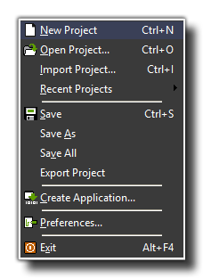

In the file menu you can find the commands you'd expect for loading
and saving files, but there are also a few special ones:
- New: Choose this command to start creating a new game from scratch. If the current game has changed you are asked whether you want to save it before proceeding. There is also a tool-bar button for this command, but both will methods will take you back to the "Welcome" screen where you can create a new project.
- Open: Opens a GameMaker: Studio game file with the extension *.gmx.
- Import: Imports a GameMaker: Studio *.gmz compressed file (which will then be saved as a standard *.gmx) game file. You can also select to import Legacy GameMaker files with the extensions gm81, gmk, gm6 or gb1...n files from here. These might not work correctly in this new version due to changes in GameMaker over the years, and as such it is recommended that you check out the YoYo Knowledge Base to see what's changed between versions before deciding to import legacy files. There is also a tool-bar button for this command and you can even open a game by dragging the file into the actual GameMaker: Studio window.
- Recent Files: Use this sub-menu to open game files you have recently opened or modified.
- Save: Saves the game project file under its current name with the *.gmx extension. If no name was specified before, you are asked for a new name. You can only use this command when the file has been changed and, again, there is a tool-bar button for this. Saving with this command will only save those things that have been changed since the file was opened.
- Save As: Saves the current game project file under a different name. You are asked for a new name before saving.
- Save All: Saves the game project file under its current name with the *.gmx extension. If no name was specified before, you are asked for a new name. Unlike the regular "Save" command, this will export and save all the game information, whether it has changed or not.
- Export Project: Exports your project as a compressed GameMaker file with the format *.gmz. These project files contain all the information relevant to your current project (including resources, extensions, game information etc...) which can then be imported again into GameMaker: Studio as a complete project in the future. This is very useful for transferring a project over a network as well as for storing shelved projects or backup copies of a current project.
- Create Application: Once your game is ready you will probably want to give it to others to play! By using this command you create a stand-alone version of your game. The actual files produced will depend on the target module chosen in the drop down menu of the GameMaker: Studio GUI.
- Preferences: This will open the GameMaker: Studio preferences where you can adjust how the program looks as well as different behaviours when dealing with resources etc... For further information on this please see GameMaker: Studio Preferences
- Exit: We know that making games is fun and addictive, but you need to eat and sleep sometimes! So press this to exit GameMaker: Studio. If you changed the current game project then you will be asked whether you want to save it before the program closes.